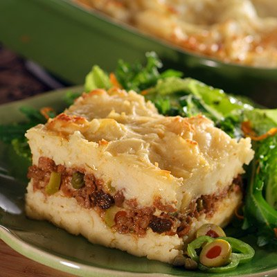

Potato cake

Description
Ingredients
- 1 tablespoon olive oil
- 2 cubanela chilies or green peppers, finely chopped
- 1 medium red onion, finely chopped
- 2 cloves garlic, finely chopped
- 1 1/2 pounds ground beef
- 3 tablespoons tomato paste
- 1 MAGGI Chicken Bouillon Cubes chicken broth, dissolved in 1 1/4 cups boiling water
- 6 green olives stuffed with pimento, chopped
- 1 teaspoon capers
- 1 teaspoon salt, divided
- 2 tablespoons of raisins
- 1 large boiled egg, chopped
- 3 1/2 pounds (7 or 8 medium) potatoes, peeled, cut into cubes
- 1/4 cup (1/2 stick) butter
- 2 large eggs, lightly beaten
- Evaporated Milk 1 can (12 fl oz)
- 1/4 teaspoon ground white or black pepper
- 1/4 cup (.75 ounce) freshly grated Parmesan cheese
Steps
- Heat the oil in a medium skillet over medium-high heat. Add the chilies, onion and garlic and cook for 2 to 3 minutes.
Add the ground beef, cooking it until the pink color goes away; drain it.
- Add tomato paste; stir to mix well. Add the chicken cube dissolved in water, the olives, the capers and 1/2 teaspoon of the salt.
Cook the hash without covering the pan and stirring occasionally until almost all of the liquid has evaporated.
Reduce heat to low; add the raisins. Cover skillet; cook for 10 more minutes, stirring occasionally.
Remove the pan from the heat. Delicately add the chopped egg.
- Preheat oven to 375° F. Grease a 13 x 9-inch baking dish.
- Boil potatoes in salted water until tender; drain them well. Puree them smoothly while they are hot.
Add butter; Alternately add the evaporated milk and the beaten eggs.
Add remaining 1/2 teaspoon salt and pepper; mix them well.
- Put half of the mashed potatoes in the dish you prepared. With a spoon, place the mince on top of the potatoes.
Delicately spread the remaining potatoes over the hash. Sprinkle with Parmesan cheese.
- Bake the pastelón for 35 to 40 minutes or until the cheese browns slightly. Serve hot.
Return to main page